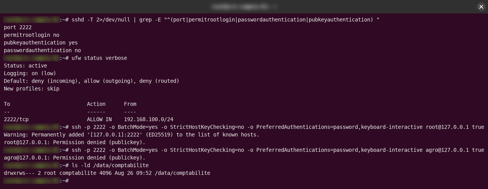
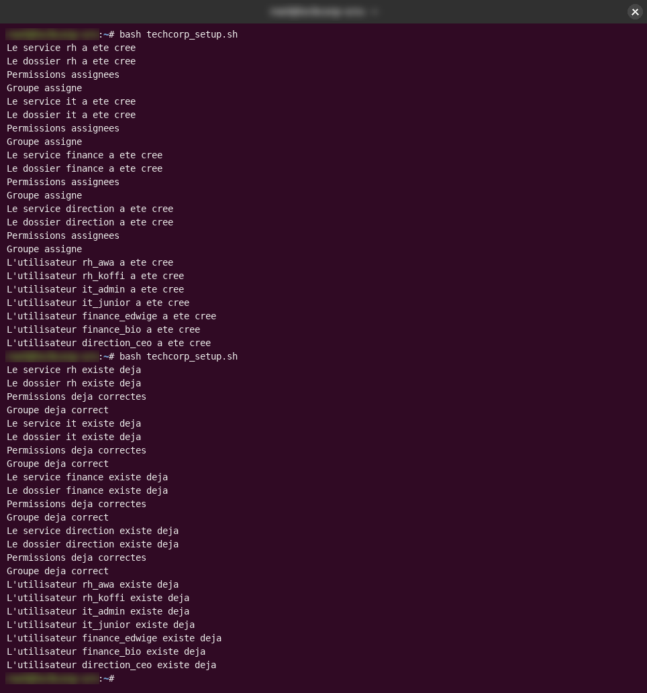
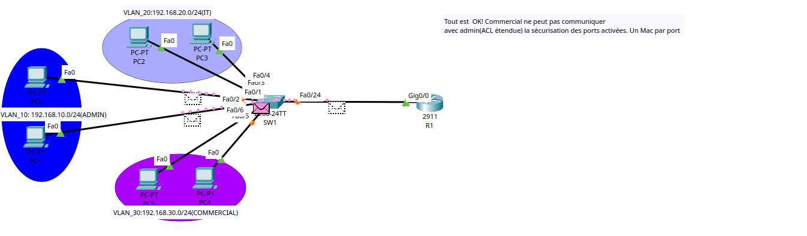
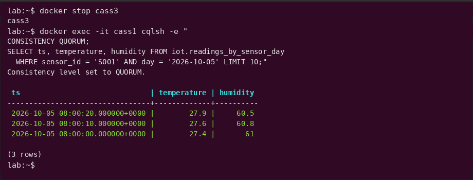

Projets
Projets
Pour chaque projet, j’explique d’où il vient, ce que j’ai fait, comment j’ai vérifié qu’il fonctionnait vraiment, et ce que j’améliorerais encore. Le code et les rapports sont liés à la fin.
-
Sécuriser un serveur Linux en sept jours Pendant mon stage, on m'a confié pour une semaine le serveur comptable d'une entreprise fictive. J'ai verrouillé les accès, mis en place des sauvegardes chiffrées, fait en sorte que le service web redémarre seul, et j'ai vérifié chaque étape par un vrai test.

-
Un serveur de fichiers cloisonné par service, des groupes Unix à Samba Quatre services, sept comptes d'employés, et une règle simple : chaque équipe ne voit que ses propres fichiers. Je l'ai construit avec des groupes Unix et des ACL, automatisé avec un script Bash qu'on peut relancer sans risque, partagé sur le réseau avec Samba, et j'ai testé chaque accès avec de vrais comptes d'employés.

-
Labos réseau d'entreprise : de la VLAN à l'architecture multi-sites sécurisée Six labos qui m'ont mené de ma première VLAN à un réseau multi-sites complet : un plan d'adressage construit à partir de vrais besoins, une politique de sécurité traduite en ACL, et des protections de niveau 2. Les captures sont mes propres fichiers de projet, avec les notes que j'ai laissées quand chaque test passait.

-
Un scanner de ports TCP en Rust, réécrit trois fois Je voulais apprendre Rust sur quelque chose d'utile : j'ai écrit un scanner de ports, puis je l'ai réécrit deux fois, à chaque fois que j'ai compris pourquoi la version précédente était lente ou gourmande.
-
Cassandra en pratique : un cluster de 3 nœuds, un test de panne et dix ans de données Avec deux camarades, j'ai exploré la façon dont Cassandra gère de gros volumes de données : nous avons conçu le schéma à partir de nos requêtes, fait tourner un cluster de 3 nœuds qui répondait encore avec un nœud arrêté, et comparé Cassandra à PostgreSQL sur dix ans de mesures de capteurs simulées.

-
Python pour la sécurité : un journal d'apprentissage Apprendre Python avec des exemples de sécurité plutôt qu'un « hello world » : un script qui extrait les adresses IPv4 d'un journal, les classe avec le module ipaddress et produit des rapports TXT, JSON et CSV, plus un petit scanner TCP limité à localhost.
-
Programmation parallèle en Fortran avec MPI Du premier MPI_Send à l'équilibrage dynamique de charge : échanges point à point, Scatter/Gather sur des matrices, et un schéma maître–esclaves qui confie 150 problèmes résolus par la méthode de Newton au premier processus libre.